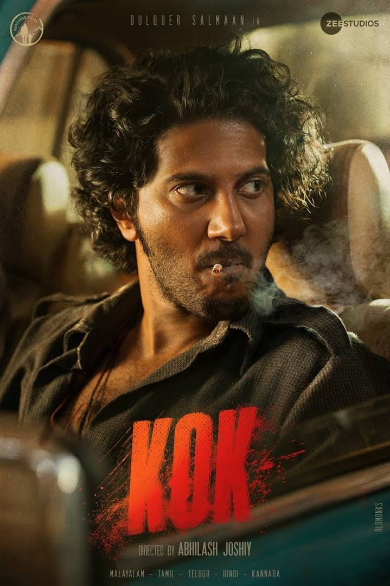

King of Kotha Review: King of Boring

Rating:⭐⭐
King of Kotha was the biggest hyped film for Dulquer Salmaan. Unfortunately it didn't work for anyone especially me. Music and
BGM was fantastic at least, but the film felt way too long. Locking in at a three hour runtime, I know for a fact that when it comes
out on OTT, they will surely cut some scenes, just like what they did in Valimai. DQ tries his best, but fortunately he was only there
for a few scenes. If they had just made like "rise-to-a-gangster" type of films like Mahaan or KGF, then surely this would've of cliked on.
Instead they start with a flashback and then when the interval comes, DQ's new look arises. Overall, a massive disappointment.